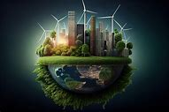
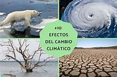
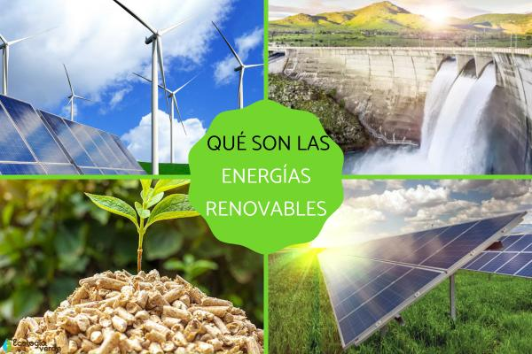

Descubre nuestras Conferencias
Explora una selección de conferencias diseñadas para inspirar e informar sobre temas clave de sostenibilidad, tecnología y bienestar social. Aprende de expertos y líderes en el campo.
Conferencias Disponibles

Conferencia: Futuro Sostenible
Únete a líderes del sector mientras analizan las principales tendencias en sostenibilidad y el futuro del planeta.

Conferencia: Acción Climática
Descubre las estrategias más innovadoras para combatir el cambio climático, presentadas por expertos internacionales.
Conferencia: Educación Ambiental
Explora cómo la educación puede ser un motor clave para generar conciencia y cambio positivo en nuestras comunidades.

Conferencia: Energía Renovable
Aprende sobre el futuro de las energías limpias y cómo pueden transformar nuestra sociedad hacia un modelo sostenible.